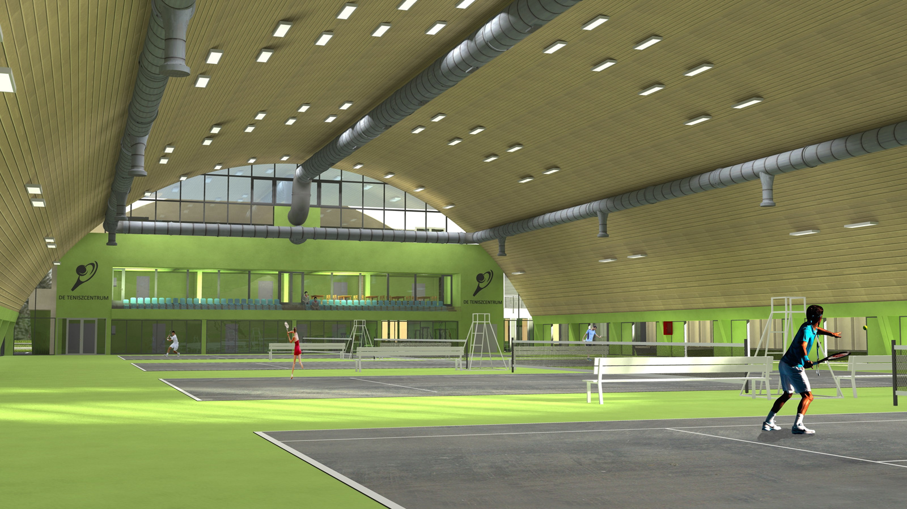
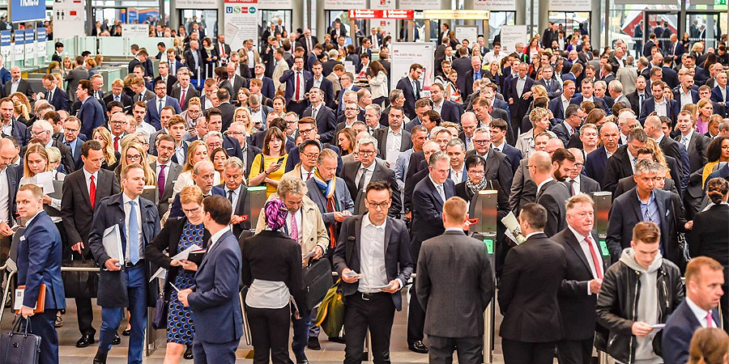
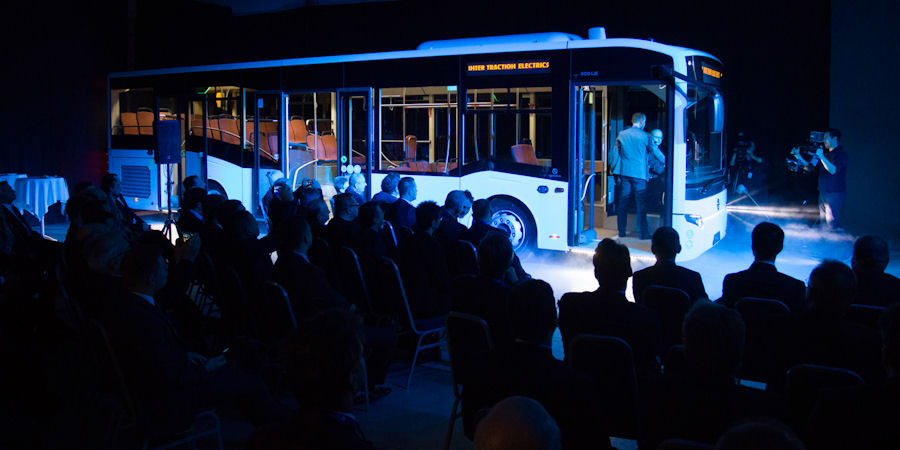
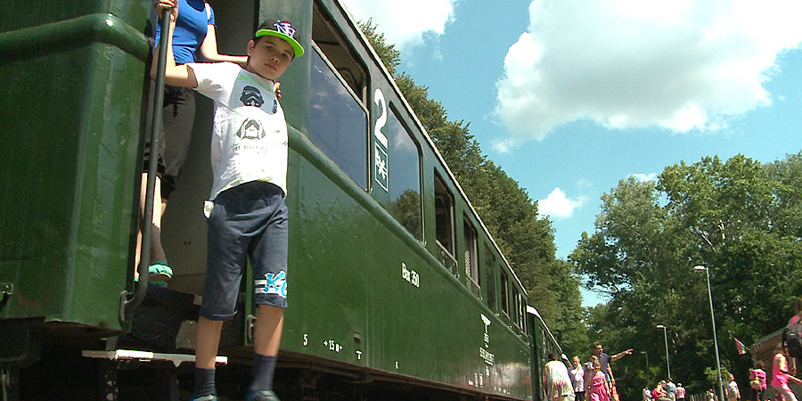
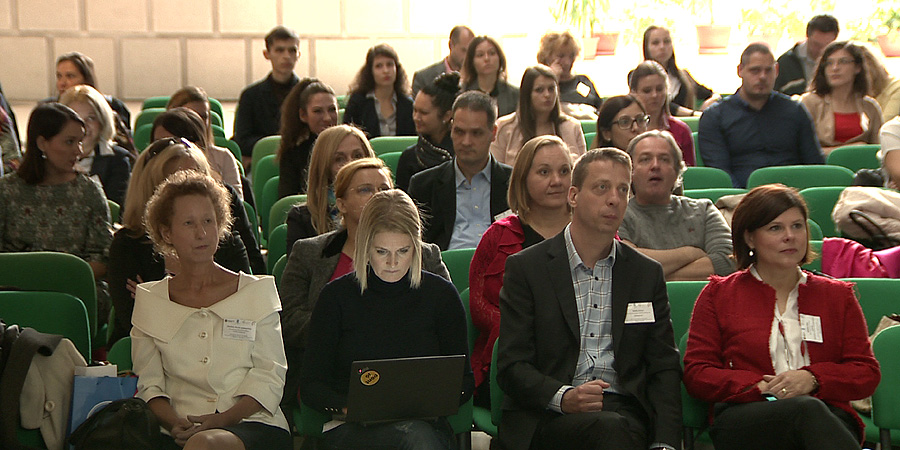
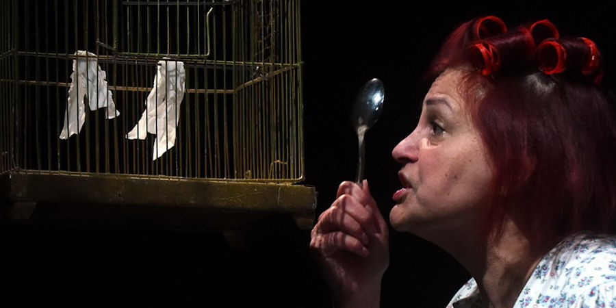
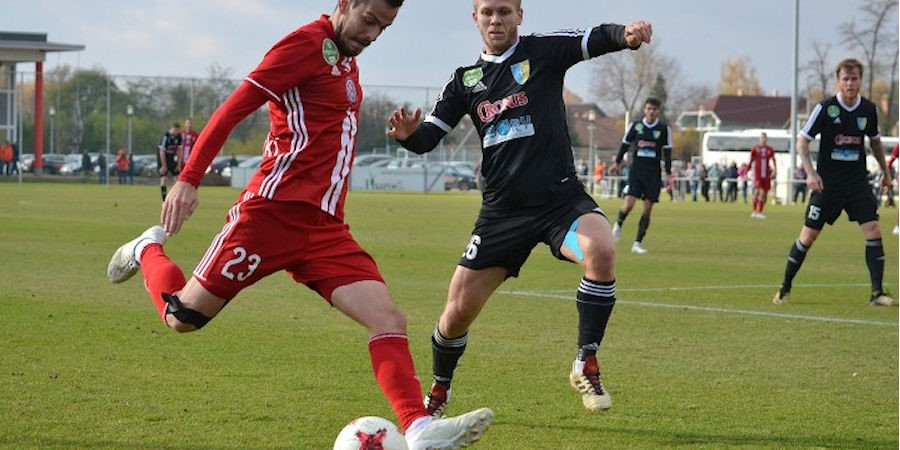

Lerakták az alapkövet: elkezdődött a Debreceni Egyetem teniszközpontjának építése
Szerző: Dehir.hu | Közzétéve: 2018.10.25.
Címlap - Az oktatást és sportolást is szolgáló központban négy szabványos méretű, kemény borítású teniszpályát alakítanak ki.
Sportgazdasági-menedzsment és Teniszközpontot hoz létre a Debreceni Egyetem a Böszörményi úti campusán. Az épületnek csütörtökön rakták le az alapkövét. Az épület két fő épületrészből áll majd össze. Az első, fejépületi szekcióban három szinten oktatási (tantermek, irodák) és kiszolgáló helyiségek (öltöző, nézőtér, büfé) találhatók majd, a második szekcióban, magában a teniszcsarnokban pedig négy szabványos méretű, kemény borítású teniszpályát alakítanak ki. A központ egyfelől oktatási célokat szolgál majd, mind elméleti, mind pedig a teniszoktatás szempontjából gyakorlati síkon is, másfelől pedig ezen központi létesítmény helyet ad a sportágat űző sportolók számára gyakorláshoz és versenyzéshez is. A csarnok mobil pályák használatával alkalmas lesz tollaslabdázásra is. (Forrás:dehir.hu)
Milyen lehetőségeket látnak Debrecenben a nemzetközi ingatlanbefektetők?
Szerző: Dehir.hu | Közzétéve: 2018.10.25.
Címlap - Egymást váltották a tárgyalópartnerek Debrecen standjánál Európa legnagyobb ingatlan- és beruházási szakvásárán. Négy téma tért vissza folyamatosan a beszélgetések során.
Debrecen is bemutatkozott Európa legnagyobb ingatlan- és beruházási szakvásárán október 8-a és 10-e között. A város képviselői Budapest, Szeged és Pécs mellett mutatták be a befektetési lehetőségeket. A müncheni Expo Real 1998 óta mára Európa legnagyobb ingatlanfejlesztési kiállításává nőtte ki magát. Idén 64 ezer négyzetméteren 75 ország ingatlanfejlesztési, beruházási lehetőségei mutatkoztak be. Köztük az egyik legkeresettebb ország épp Magyarország volt, köszönhetően annak, hogy 2010 óta a magyar ingatlanbefektetési forgalom nőtt a leginkább a régióban. A debreceni delegáció tagja volt Póser Zoltán. Az EDC Debrecen Város- és Gazdaságfejlesztési Központ ügyvezetője a tapasztalatokról beszélt a Debrecen Televízió Esti Közelkép című műsorában.(Forrás:dehir.hu)
Módosítják a szerződést, jöhetnek az új Mercedes-buszok Debrecenbe
Szerző: Dehir.hu | Közzétéve: 2018.10.25.
Debrecen - Elfogadta a közgyűlés a konzorciumi szerződés
módosításáról szóló javaslatot, így az új feltételeknek
megfelelően bővíti járműparkját a DKV.
A városban elsőként legyártott Mercedes-autóbusz mellé a DKV tervei szerint további öt fog érkezni hamarosan. A DKV ugyanis kezdeményezte, hogy öt csuklós Mercedes Conecto G típusú alacsony belépésű busszal bővüljön még a járműpark, ilyen buszok közlekednek Budapesten 2015 óta. A járműállomány változása miatt módosítani kellett a debreceni önkormányzat és a CÍVISBUSZ Konzorcium között korábban létrejött közszolgáltatási szerződést. Erről is döntött csütörtöki ülésén a városi képviselő-testület.
Varga Zoltán, a DK képviselője szerint nem derül ki az előterjesztésből, hogy milyen bérleti díjjal futnak majd a buszok. Értelmezése szerint a járművekben nem lesznek mozgáskorlátozott rámpák, így ezek a buszok nem felelnek meg az eredeti közszolgáltatási szerződésnek. Afelől érdeklődött a képviselő, hogy miért nem azokat a Volvo buszokat hozzák vissza, amiket elvittek Debrecenből, továbbá jelent-e bármilyen plusz kötelezettséget a városnak az új buszok beállítása? A kérdésfelvetésre Nagy Attila, a DKV Zrt. vezérigazgatója úgy reagált, mindenképpen mozgáskorlátozott rámpával szerelik fel a járműveket, s nem Euro 4-es, hanem 6-os szabványúak lesznek a buszok. Bérleti díjat, 332 forintos kilométerdíjat fizet majd értük a város, ami a budapesti tarifához képest igencsak kedvező, ott ugyanis ez a díj 800 forint felett van.(Forrás:dehir.hu)
Irreális összegbe kerülne a Zsuzsi vasút pályájának meghosszabbítása a Nagyállomásig
Szerző: Dehir.hu | Közzétéve: 2018.10.25.
Debrecen - Így ezt a lehetőséget elvetették. A pálya még nem megújított részét, illetve a járműállományt jövő év végéig korszerűsítenék.
A Zsuzsi vonat 17 kilométeres pályájából korábban 10 kilométernyit újítottak fel, most jöhet a hátralévő hét kilométernyi pálya modernizálása. Révész Máriusz kerékpározásért és aktív kikapcsolódásért felelős kormánybiztos egy éve azt mondta, a debreceni Zsuzsi Erdei Vasút pályájának felújítására 486 millió forintot, a járműállomány modernizálására 268 millió forintot szánnak. Ebből a pénzből kellett volna megtervezni a pálya nagyállomási bekötését is. A DKV és az üzemeltető cég most azt kezdeményezte, hogy a vasútvonal Nagyállomásra bekötésére vonatkozó megvalósíthatósági tanulmány készítése kerüljön ki a fejlesztésből, és a beruházás határidejét a jövő év végéig hosszabbítsák meg. Ez eddig kiírt közbeszerzési felhívásokra ugyanis csak olyan ajánlatok érkeztek, melyek meghaladták a rendelkezésre álló forrást. A legújabb közbeszerzés még folyamatban van, de még ha eredményes is lesz, akkor sem tudják befejezni a felújítást az eredeti határidőre, 2018. december 31-ére. (Forrás:dehir.hu)
A béremelés önmagában nem elég a dolgozók megtartásához, hangzott el Debrecenben
Szerző: Dehir.hu | Közzétéve: 2018.10.25.
Gazdaság - A munkaerőhiány komoly gondot okoz a vállalatoknak. Csak a béremelés sok esetben már nem elég ahhoz, hogy megtartsák dolgozóikat. Erről is szó volt az Innovatív HR - Kihívások a 21. században címmel rendezett szakmai fórumon. A Debreceni Egyetemen ma tapasztalatcserére és a jó gyakorlatok bemutatására is lehetőség nyílt.
Magyarországon több ezer mérnök hiányzik a munkaerőpiacról. Debrecenben csak az elmúlt 4 évben hatezer új munkahelyet jelentettek be. A szakemberek szerint most már nem munkanélküliségről hanem munkaerőhiányról kell beszélni.
Ilyenkor felértékelődik a cégek munkaerő megtartó képessége, ami nemcsak abból áll, hogy a munkaadók bért emelnek, hanem oda kell figyelni a dolgozók megbecsülésére is. Ebben pedig fontos szerepe van a vállalatvezetők érzékenyítésének. - A dolgozói elkötelezettség a vezetők értékteremtő képessége és azok kommunikációja nélkül nem működik. A HR-es a vezető nélkül ő is félkarú óriás, ez csapatmunka, csapatjáték – hangsúlyozta Hegedűs Henrik, a Humán Szakemberek Országos Szövetségének főtitkára. (Forrás:dehir.hu)
Jelentős támogatást nyert a Nádudvari Élelmiszer Kft.
Szerző: Dehir.hu | Közzétéve: 2018.10.25.
Gazdaság - A Nádudvari Élelmiszer Kft. nagy hangsúlyt fektet a minőségre, a folyamatos fejlesztésekre, a tej-, a hús- és a mirelit termékek esetében egyaránt.
Nagyvállalati beruházási támogatások előirányzatból finanszírozott "Nagyvállalati Beruházási Támogatási Program" keretében, a nagyvállalatok iparfejlesztési beruházásainak ösztönzése kategóriában nyert támogatást a Nádudvari Élelmiszer Kft.
A beruházási projekt címe: A Nádudvari Élelmiszer Kft. tejüzemének technológiai innovációja, a túrógyártó vonal és a kutteres üzemrész kapacitásbővítése, valamint a mirelit üzem panír és csomagoló vonalának fejlesztése, bővítése.
A Nádudvari Élelmiszer Kft. a Hortobágyi Nemzeti Park közelében található, száz százalékban magyar tulajdonú vállalat, mely a Nagisz-Hage cégcsoport, a régió meghatározó mezőgazdasági integrációjának a tagja. A Nádudvari Élelmiszer Kft. termékpalettáján tejtermékek, húskészítmények és mirelit termékek szerepelnek.(Forrás:dehir.hu)
Több új technológiával készül a Samsung
Szerző: Dehir.hu | Közzétéve: 2018.10.25.
Tech - Ezek között új chipek, játékosoknak szánt telefon, illetve kijelzőbe épített komponensek is lesznek.
Az elmúlt napokban egyszerre több hír is befutott a dél-koreai gyártó várható újításaival kapcsolatban, ezeken futunk most végig, hogy lássuk, mire is számíthatunk jövőre a cég háza táján. Érthető módon a Galaxy S10 van a fókuszban, emellett azonban további példányok is megjelenhetnek a piacon, amelyek már egy eddig többnyire mellőzött szegmenst is célba vehetnek.
Elsőként egy szabadalmi kérelem benyújtása került nyilvánosságra, amely azonban még tavaly áprilisról ered. Ebben az ujjlenyomat-olvasó kijelzőbe való beépítéséről tesznek említést, amelynek alapján arra számíthatunk, hogy a Galaxy S10 már valóban ezzel a megoldással bukkan majd fel. Az optikai komponens mellett azonban az előlapi kamera is bekerülhet a kijelző alá, legalábbis a most megjelent külsős információk szerint. Egyelőre a korai prototípusokat tesztelik, a technológia pedig 2020-ban készülhet el, vagyis ez valószínűleg inkább az S11 egyik fontos újítása lesz majd. (Forrás:sg.hu)
Két évnyi biztonsági frissítést ír elő a Google
Szerző: Dehir.hu | Közzétéve: 2018.10.25.
Tech - Írott szerződésbe foglalja a Google az androidos biztonsági frissítéseket - tudta meg a The Verge. A lécet is lejjebb engedi a vállalat, jó időzítéssel akár évi négy biztonsági javítás is elegendő lehet.
Új szerződéssel kényszerítené a biztonsági frissítések kiadására a gyártókat a Google. Az Androidot fejlesztő vállalat hosszú ideje szenved azzal, hogy hiába ad ki havi biztonsági javításokat az operációs rendszerhez, a javításokat a frissítéseket felügyelő telefongyártók egyszerűen nem juttatják el a végfelhasználókhoz. Emiatt rengeteg olyan sebezhető telefon (és tablet) van globálisan használatban, amelyekhez már régen elérhető lenne a javítás.
A The Verge most egy új szerződésmintát szerzett meg, amely már előírja a Google gyártópartnereinek a biztonsági javítások rendszeres kiadását, az egyes készülékek megjelenésétől számított minimum két évig. A frissítés rendszerességét meglehetősen nyakatekert módon írja elő a szöveg: eszerint minden hónap végére javítani kell a 90 napnál régebbi hibákat. A gyakorlatban ez azt jelenti, hogy legalább háromhavonta teljes javítócsomagot kell kiadni, feltéve, hogy az teljesen naprakészre hozza a szoftvert. Ha egy hónapos csúszás van a javításban (ami a lassú gyártói és szolgáltatói jóváhagyási folyamatot nézve eléggé reális), akkor az ablak 2 hónapra zsugorodik, és a feltétel csak évi hat frissítéssel teljesíthető. (Forrás:hwsw.hu)
Hajdu Steve a saját maga rajongója
Szerző: Dehir.hu | Közzétéve: 2018.10.25.
Bulvár - Óriási siker volt tavaly az Álomutazó című mesemusical, amit idén karácsony környékén újra színpadra állítanak az ismert sztárokkal, a monumentális díszletekkel és természetesen az azóta slágerekké vált dalokkal. Hajdu Steve azonban ezen változtatna.
Az Álomutazó rendezője, Juronics Tamás szerint a mai napig kihat a darab sikere, példaként említette, hogy horvátországi nyaralásuk során a szomszéd apartmanban lakó gyerekek folyamatosan a dalokat énekelték, de egy salgótarjáni étterem szomszéd asztaltársasága is a darabról sztorizgatott. Hajdu Steve gyakorta megnézi a legnagyobb videómegosztón saját dalát, elmondása szerint, hogy növelje a megtekintések számát. (Forrás:dehir.hu)
Megható képekkel ünnepelnek a Barátok közt sztárjai
Szerző: Dehir.hu | Közzétéve: 2018.10.25.
Bulvár - Húsz évvel ezelőtt, 1998. október 26-án került televízióba a Barátok közt első része.
A jeles alkalmat a népszerű sorozat színészgárdája sem hagyhatta szó nélkül: több jelenlegi, és korábbi szereplő megformálója posztolt megható képes üzenetet Instagramra.(Forrás:dehir.hu)
Igazi sikerdarab ősbemutatójára készül a Csokonai Színház
Szerző: Dehir.hu | Közzétéve: 2018.10.25.
Kultúra - A Deszka fesztiválon aratott sikert látva döntött úgy a színház, hogy felveszi repertoárjába a Mintapinty című darabot.
Kovács Dominik és Kovács Viktor Mintapinty című drámáját október 26-án mutatja be a Csokonai Színház. Az előadás különlegessége, hogy nem csupán ősbemutatója a darabnak, de a szerzők is újak a pályán. A fiatal szerzőpáros, Kovács Dominik és Kovács Viktor eddig három drámával jelentkezett, a Mintapinty a tavalyi DESZKA fesztiválon keltette fel a Csokonai Színház érdeklődését. A felolvasószínházi siker után döntött úgy a teátrum, hogy felveszi 2018/19-es repertoárjába a darabot.
A Mintapintyből később a POSZT-on készült egy újabb felolvasószínházi változat, akkor már Lőkös Ildikó dramaturg és Szabó K. István rendező közreműködésével. A darab főhőséből, az 1940-ben született Molnár Zsókából sok minden lehetett volna: háborús áldozat, kispolgári származása miatt osztályidegennek ítélt értelmiségi, flitteres ruhában éneklő operettsztár, amerikai nagynéni – de egyik sem lett. Az égetthalmi falumúzeum igazgatójaként nyugdíjazták 2003-ban. Azóta pintyeivel beszélget, és keresi a lehetőséget, hogy drámai hős lehessen. (Forrás:dehir.hu)
Újra megnézhetnek két sikerdarabot a debreceni nézők
Szerző: Dehir.hu | Közzétéve: 2018.10.25.
Kultúra – A Macskajáték és George Sand is visszatér: az egyiket a Csokonaiban láthatjuk, a másik darabot a stúdióban.
Adélaïde Pralon, a fiatal francia drámaíró, rendező és műfordító tavaly harmadszor rendezett Debrecenben. A stúdiószínházban a 19. századi írónő, George Sand életét és művészetét idézte meg egy zenés fantáziajáték keretében két remek színésznővel, Varga Klárival és Szakács Hajnalkával. Azóta ugyan Szakács Hajnalka „eligazolt” Csokonai Színházból, ám szívesen tér vissza a Ha álom az élet című előadás kedvéért, mely az idei szezonban is műsoron maradt.
A George Sand szövegeinek felhasználásával készült előadást legközelebb október 29-én láthatják a Horváth Árpád Stúdiószínház nézői. A méltán népszerű író, Örkény István 1963-as kisregénye alapján készült Macskajátékot szintén a tavalyi évadban mutatta be a Csokonai Színház társulata. (Forrás:dehir.hu)
Nem régen épült fel, újra súlyos sérülést szenvedett a Loki támadója
Szerző: Dehir.hu | Közzétéve: 2018.10.25.
Sport - Ismét súlyos sérülést szenvedett a DVSC egyik edzésen Bereczki Dániel. Megint hosszú kihagyás vár rá.
A vizsgálatok során kiderült, hogy a 23 éves játékos bal térdében elszakadt a keresztszalag, így műtét és újabb hosszadalmas rehabilitáció vár rá. Mint ismert, a fiatal támadó korábban már szenvedett ilyen sérülést, akkor a jobb lábában.
Ami a Loki többi sérültjét illeti, Haris Tabakovic és Mészáros Norbert a rehabilitációját végzi. Ezequiel Calvente bal combközelítője részleges elszakadt, emiatt egy ideig rá sem számíthat a szakmai stáb. Ioan Filip a héten még különmunkát végez, utána azonban csatlakozik a csapathoz. (Forrás:dehir.hu)
Duplázás: a Magyar Kupában sem jelentett akadályt az Eger a Loki kéziseinek
Szerző: Dehir.hu | Közzétéve: 2018.10.25.
Sport - Jobban játszott a Loki az NB I újonca ellen, mint pénteken este. Nagyobb is lett a különbség a Magyar Kupa mérkőzésen.
A bajnoki meccs után ezúttal a Magyar Kupában találkoztak a csapatok. Ezúttal az egriek voltak a házigazdák, s a Magyar Kupa 4. fordulójába jutás volt a tét, több mint hetven Loki-szurkoló utazott el a meccsre. Az egriek pedig roppant sportszerűen a kötelezően előírtnál több jegyet biztosítottak a debrecenieknek.
A Loki meg is hálálta a támogatást, hiszen sokkal jobban játszott, mint pénteken, a meccs így aztán már az első félidőben eldőlt. A folytatásban mindenki lehetőséghez jutott és hozzá is tudott tenni játékhoz. A debreceni drukkerek pedig a roppant lelkes hazaiakat is megtapsolták. (Forrás:dehir.hu)
Hírek itthonról
- Tévhit lenne, hogy a vegetáriánus étrend egészségesebb?
- Babos Tímea megvédte világbajnoki címét
- Sári Évi szexi latin szívtipróként készül kilépni a komfortzónájából
- Hien alig várja már, hogy őrületes rap-bulit csapjon a színpadon
- Kállay-Saunders András nem úszta meg: Szexi csajként twerkel majd a sz...
Hírek a nagyvilágból
Hallgató adatai
Kun Zoltán
Neptun kód:RR9WJQ
Debreceni Egyetem
mérnök-informatikus, levelező tagozat